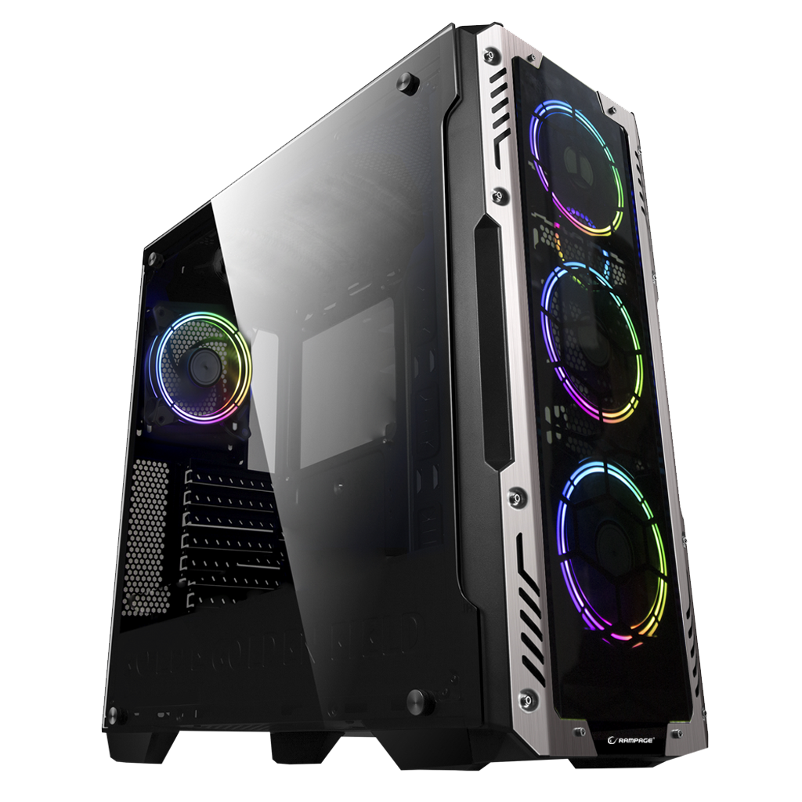

Kasa
Kasa, bilgisayar bileşenlerini bir arada tutan ve soğutma, hava akışı gibi önemli fonksiyonları destekleyen yapıdır. Estetik tasarımı ve fonksiyonel özellikleri ile sistem performansınızı doğrudan etkiler. Doğru kasa seçimi, bileşenlerin düzenli yerleşimi, iyi soğutma ve genişletilebilirlik açısından kritik öneme sahiptir.
Kasa Özellikleri
İyi bir kasa; yapı kalitesi, hava akışı, iç düzen ve estetik açıdan beklentilerinizi karşılamalıdır. İşte kasa özelliklerinde öne çıkan unsurlar:
1️⃣ Yapı Kalitesi ve Malzeme
Kasanın dayanıklılığı, kullanılan malzeme ve üretim kalitesi ile ölçülür. Alüminyum, çelik ve temperli cam gibi materyaller tercih edilebilir.
2️⃣ Hava Akışı ve Soğutma
İyi bir kasa, yeterli fan yuvası ve hava deliklerine sahip olmalıdır. Böylece bileşenlerin verimli bir şekilde soğutulması sağlanır.
3️⃣ İç Düzen ve Kablo Yönetimi
Bileşenlerin düzenli yerleşimi, kablo yönetimi bölmeleri ve geniş iç alan, sistem kurulumunun kolaylığı ve temiz görünüm açısından önemlidir.
Kasa Seçerken Dikkat Edilmesi Gerekenler
Seçiminizi yaparken göz önünde bulundurmanız gerekenler:
✔ Bileşen Uyumluluğu: Anakart, ekran kartı ve diğer bileşenler için yeterli alan ve uygun montaj noktaları var mı?✔ Hava Akışı: Etkili soğutma için yeterli fan yuvası ve hava delikleri mevcut mu?
✔ Kablo Yönetimi: Temiz bir iç düzen ve kablo gizleme seçenekleri bulunuyor mu?
✔ Estetik ve Tasarım: Kişisel zevkinize ve masaüstü düzeninize uygun mu?
✔ Genişletilebilirlik: Gelecekte ek bileşenler ekleyebilmeniz için uygun alan sunuyor mu?
Kasa Türleri
💻 1. Full Tower Kasa
Geniş iç hacmi sayesinde çok sayıda bileşeni barındırabilir. Genellikle yüksek performanslı sistemlerde tercih edilir.
🖥 2. Mid Tower Kasa
Orta boyutlu yapısı ile en popüler seçeneklerden biridir. Hem performanslı hem de kompakt bir düzen sunar.
🎮 3. Mini-ITX Kasa
Küçük form faktörü ile dar alanlarda kullanılmak üzere tasarlanmıştır. Taşınabilir ve minimalist sistemler için idealdir.